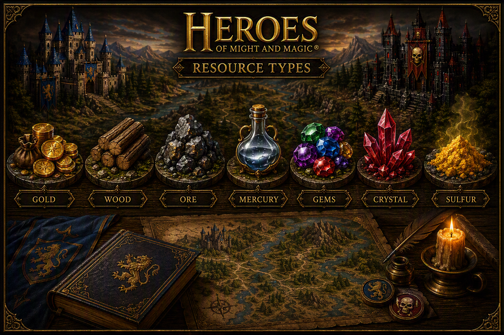

Other resources
Here you can find a link to other resources made by the HOMM3 The Board Game community.

- Map editor
-
Site for creating the layout of map tiles. This is the site I've used to show the layout of the map for the scenario. The generated or created maps can be saved and loaded for further editing
The map editor is created by Zedero.
- Wiki
-
Want an overview of all the cards and units? The Herores of Might and Magic: The Board Game Wiki has it all!
- Hero creator
-
Good idea for a new hero with a kick-ass ability! Create it here using k-adam's hero creator.
- More scenarios
-
The Fan based mission book project. A collection of community created coop, clash, and allience missions. My favorites so far are Titans Stronghold and Close to Enemies!